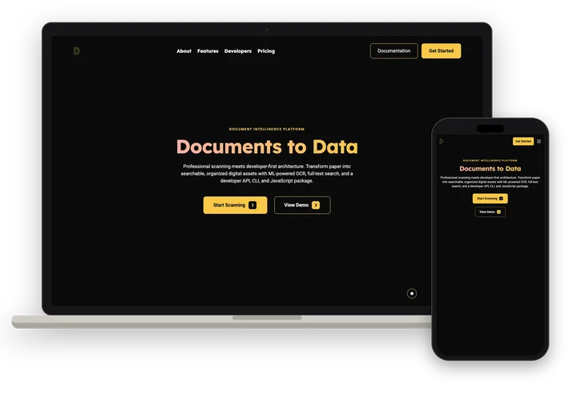

Document Scanner
Product · Landing site · Product interface
Browser-based document capture with OCR and full-text search, plus a REST API, CLI and JavaScript scanning package.
Visit ↗


About
Document Scanner turns paper into searchable digital records. People capture pages with a device camera or upload existing files, and the browser handles corner detection and perspective correction.
OCR extracts text with broad language support, and full-text search covers file names and document contents with highlighted snippets, folders and filters. Teams share folders and documents with role-based access.
Developers can build with a REST API, a CLI for terminals and CI, and a JavaScript package that runs the scanning pipeline on-device in the browser. The site describes Document Scanner as an early-stage product.
Butts Studios designed the landing site and the product interface.
Details
- What we made
- Landing site · Product interface
- Captured
- October 2026
Gallery
10 images. Tap any one to see it full size.


Articles & notes
Published pages from Document Scanner: write-ups, docs and data. Each opens on its own site.
- documentscanner.app ↗Scan a document in your browserDemo page and embed guide for the client-side scanning engine
- documentscanner.app ↗Build with Document Scanner APIDeveloper guide to the REST API, CLI and on-device JavaScript package
- documentscanner.app ↗How machines learned to read a pageA history of optical character recognition and machine reading
- documentscanner.app ↗TrOCR collapses the OCR stack into a single transformerHow TrOCR replaces a multi-stage OCR pipeline with one transformer model
- documentscanner.app ↗LayoutLMv3 learns text, layout, and image togetherHow LayoutLMv3 combines text, position and image for document understanding
- documentscanner.app ↗DocLayNet shows the training distribution is the bottleneckWhat the DocLayNet dataset shows about training data for layout analysis